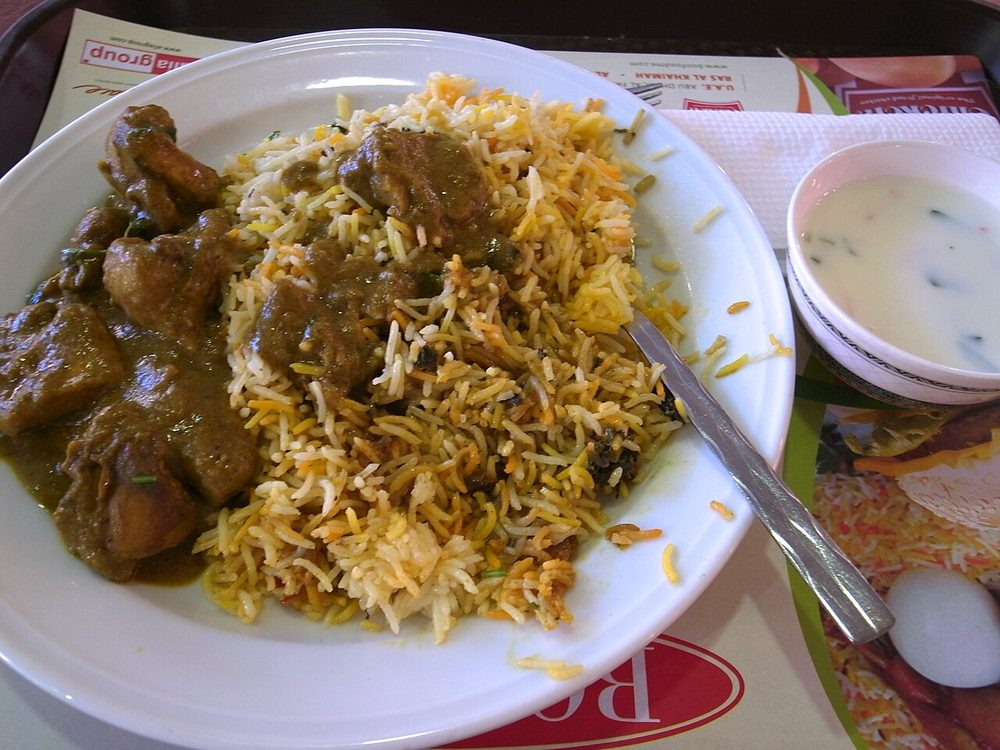

Ambur Biryani
seeraga samba rice and mutton with a soaked chilli paste, no whole garam masala at all

Contains: milk
Ingredients
Quantities for 4.
- 700g on the bone Mutton
- 400g Basmati Riceseeraga samba is the authentic grain; basmati is the workable substitute
- 15, soaked and ground to a paste Dried Red Chillithe defining element; Ambur uses chilli paste, not powder
- 3, sliced Onion
- 2, chopped Tomato
- 150g Yogurt
- 2 tbsp paste Ginger
- 2 tbsp paste Garlic
- a large handful Mint
- a large handful Coriander Leaves
- 1 Lemon
- 6 tbsp Neutral Oil
- 600ml Water
- to taste Salt
Cookware
stovetop, pressure cooker
Checked against the ingredient list for ten allergens: milk, egg, fish, crustaceans, tree nuts, peanuts, sesame, mustard, soy and gluten. Brands vary, so read the label on anything new to you.
Before you start
- Ambur biryani has almost no whole spice. The flavour is chilli paste, ginger, garlic and mint, and the restraint is the point.
- It is cooked as a one-pot dish, not layered. The rice goes into the meat stock.
Method
- Marinate the mutton in the yogurt, ginger, garlic and half the chilli paste for 1 hour in the refrigerator.
- Fry the onion in the oil until golden. Add the rest of the chilli paste and fry 3 minutes.
- Add the marinated mutton and tomato and cook until the meat is browned and the oil separates.
- Add 600ml water and cook 40 minutes until the mutton is tender and you have a strong stock.
- Stir in the washed rice, mint, coriander and salt. Cover tightly and cook 15 minutes on the lowest heat.The liquid should be roughly one and a half times the rice by volume, no more.
- Rest 10 minutes off the heat, squeeze over the lemon and fork through gently.
Safe temperatures: Whole cuts of mutton, beef and pork are done at 63°C / 145°F, rested 3 minutes. A long braise passes that well before the meat is tender. Reheat leftovers to 74°C / 165°F. FoodSafety.gov
Storage
Keeps 2 days refrigerated. Cool quickly and refrigerate within two hours, as with any cooked rice. Reheat with a sprinkle of water under a lid.
Nutrition Medium estimate
High protein: 46 g a serving, 23% of the calories
| Per serving643 g | Per 100 g | |
|---|---|---|
| Calories | 821 kcal | 128 kcal |
| Protein | 46.5 g | 7 g |
| Carbohydrate | 95.8 g | 15 g |
| of which sugars | 7.2 g | 1 g |
| Fibre | 3.8 g | 1 g |
| Fat | 26.6 g | 4 g |
| of which saturated | 4.4 g | 1 g |
| of which unsaturated | 20.4 g | 3 g |
Ingredients given to taste count as zero, so the real figures run a little higher. Nearest database match used for mutton. Estimated from raw ingredients using USDA FoodData Central.
More like this: Gluten-free Indian recipes · Tamil Nadu recipes
Times, yields, allergens and nutrition are guidance. Use your own judgement on doneness and on storing. More in About.